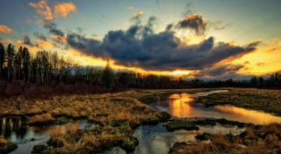
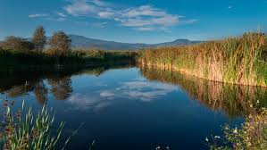
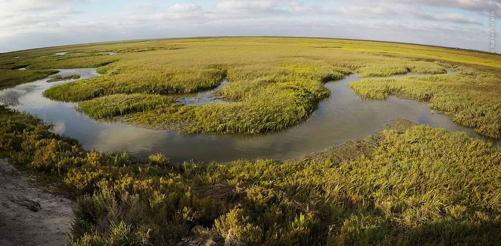

Humedales (ecosistemas acuáticos y subacuáticos)Los humedales son los biomas más productivos. A partir de ellos se realiza el abastecimiento
de agua para las poblaciones y la agricultura; además, poseen una gran riqueza vegetal
y animal. Cumplen varias funciones, como almacenamiento de agua, protección contra
tormentas, retención de nutrientes, estabilización de las condiciones climáticas, como la
temperatura, control de la erosión, estabilización de costas, etcétera



Los humedales son terrenos inundados por aguas dulces, salobres o saladas de forma
temporal o permanente; pueden ser naturales o artificiales. Los artificiales son las
presas, lagos artificiales, estanques acuícolas, salinas y pozos. Los naturales son lagos,
ríos, lagunas, manglares, pantanos,
esteros, barras y mar. En todos hay una
enorme producción de organismos
unicelulares o multicelulares como las
algas y del reino animal como esponjas,
medusas, corales, moluscos, crustáceos,
equinodermos, peces y reptiles, como
cocodrilos y tortugas marinas; son el
hábitat de muchas aves endémicas y
migratorias, así como de mamíferos
acuáticos como el manatí, elefantes
Angel Esteban Tabardillo BrionesDayann Gerardo Cordova ArmendarizJuan Pablo Ortiz GonzalesIvan Alberto Rodriguez HernandezJose Rigoberto Martinez Peraza